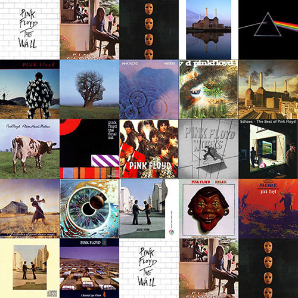

Pink Floyd live in London during the 1995 P•U•L•S•E Tour.

Pink Floyd were an English rock band formed in London. They achieved international acclaim with their progressive and psychedelic music. Distinguished by their use of philosophical lyrics, sonic experimentation, extended compositions and elaborate live shows, they are one of the mostcommercially successful and musically influential groups in the history of popular music.
Pink Floyd were founded in 1965 by students Syd Barrett, Nick Mason, Roger Waters, and Richard Wright. They gained popularity performing in London's underground music scene during the late 1960s, and under Barrett's leadership released two charting singles and a successful debut album, The Piper at the Gates of Dawn (1967). David Gilmour joined as a fifth member in December 1967; Barrett left the band in April 1968 due to deteriorating mental health. Waters became the band's primary lyricist and, by the mid-1970s, their dominant songwriter, devising the concepts behind their critically and commercially successful albums The Dark Side of the Moon (1973), Wish You Were Here (1975), Animals (1977), The Wall (1979) and The Final Cut (1983). The Dark Side of the Moon and The Wall became two of the best-selling albums of all time.
Wright left Pink Floyd in 1979, followed by Waters in 1985. Gilmour and Mason continued as Pink Floyd; Wright rejoined them as a session musician and, later, a band member. The three produced two more albums, A Momentary Lapse of Reason (1987) and The Division Bell (1994), and toured until 1994. After nearly two decades of acrimony, Pink Floyd reunited with Waters in 2005 for a performance at the global awareness event Live 8, but Gilmour and Waters have since stated they have no plans to reunite as a band again. Barrett died in 2006 and Wright in 2008. The final Pink Floyd studio album, The Endless River, recorded without Waters and based on songs recorded in 1993-1994, was released in November 2014. Pink Floyd were inducted into the US Rock and Roll Hall of Fame in 1996, and the UK Music Hall of Fame in 2005. By 2013, the band had sold more than 250 million records worldwide, including 75 million certified units in the United States.
BACK TO TOP